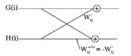

Electronics freak, hardware tinkerer, movie buff, android lover and blogger
Solving Discrete Fourier Transform on FPGA
Made a DFT solver on the FPGA. We used the butterfly structure of the radix 2 FFT algorithm and the concurrency of FPGA to solve the DFT equations. We decided to solved 4 point DFT using FFT algorithm.

Inputs were taken from Function Generator and sampled via ADC and results were displayed on CRO and the LEDs. We used Spartan 3 FPGA kit and Verilog language. Xilinx IDE was used for coding.
After writing the code, we optimized it and did various routing and also power analysis.
The below image shows the clock route for our code.